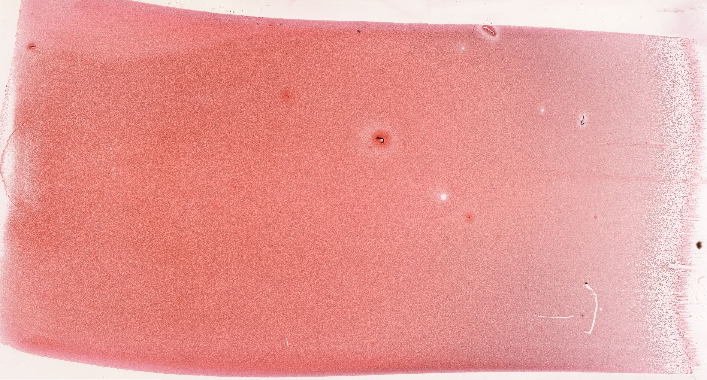
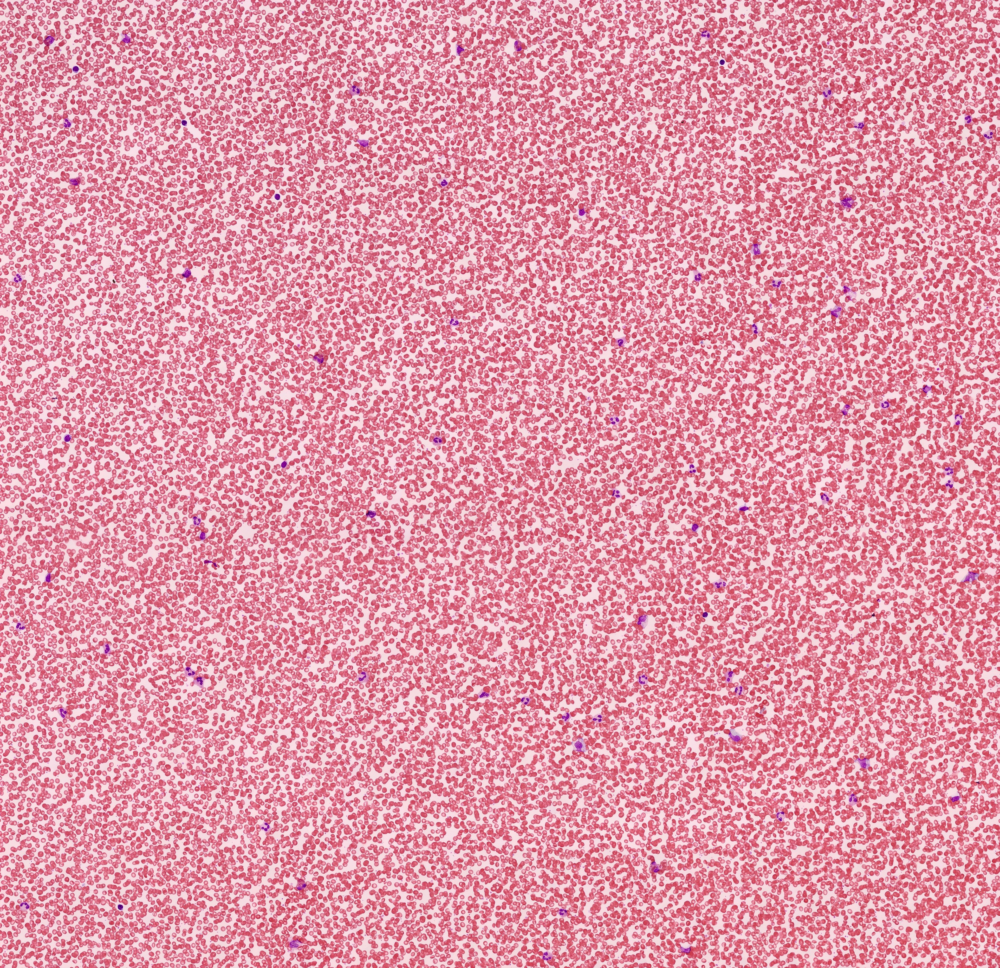
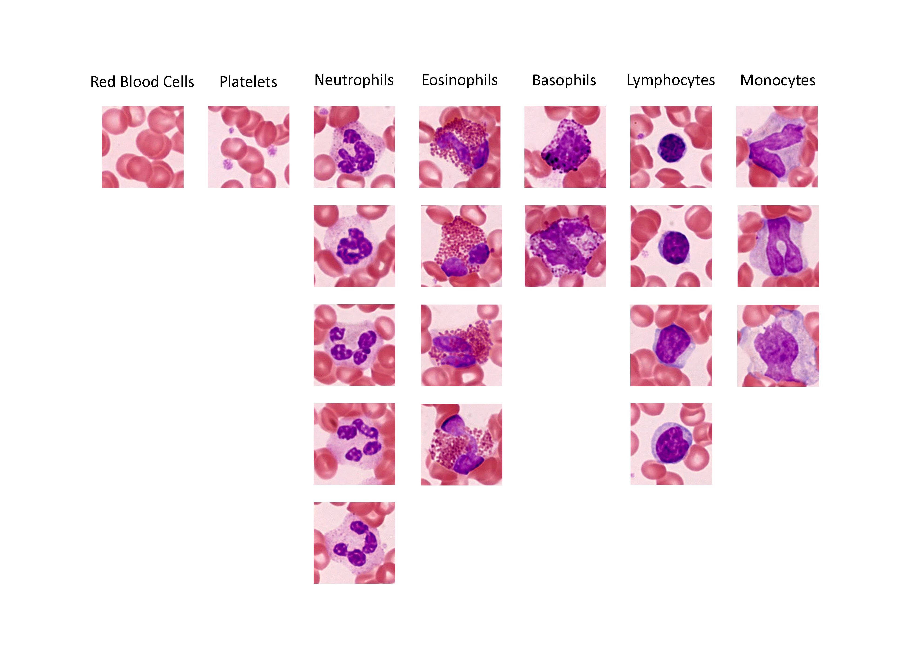

Chapter 07 · 细胞与基本组织
外周血
Peripheral Blood · 4 小节 · 4 张切片 · 21 张电镜 · 本地概览 4 张
本章导语
血液是流动于心血管内的液态结缔组织，细胞外基质就是血浆。本章以血涂片为观察对象，先认识涂片的制备与染色特点，再逐一辨认红细胞、五类白细胞和血小板。血细胞种类多而形态相近，学习时按两条线索归类：一看胞质有无特殊颗粒，二看核的形状与染色质疏密。最后用数量比例和核形颗粒交叉核对，把分类固化为可复述的对照表。
复习重点
- 血液的组成与血浆、血细胞的相对比例
- 血涂片的制备、染色与正确观察顺序
- 红细胞双凹圆盘状形态与中央淡染的原因
- 五类白细胞按颗粒和核形分类的依据
- 血小板的结构本质与功能
易混淆对比
- 中性粒细胞 vs 嗜酸性粒细胞：前者颗粒细小淡紫红且核分三至五叶，后者颗粒粗大鲜红、核多为两叶。
- 淋巴细胞 vs 单核细胞：前者核圆而几乎占满胞体，后者核呈肾形或马蹄形、胞质较多。
- 红细胞 vs 血小板：红细胞数量多且形态规则中央淡染，血小板小而不规则并常成簇分布。
阅读提示：本页中文要点为自编复习笔记，不是原站正文的翻译；标本图像为经作者书面许可保存的中分辨率概览，每张卡片保留 © 署名与原页面链接，“原站本章/原站切片”可查看高倍与结构标注。本站为 Histology Guide 的非官方中文学习改编版，未经其认可或背书。
血液
Blood
- 血液由血浆和血细胞组成，血浆即其细胞外基质。
- 成人血液约占体重的百分之七，呈红色不透明液体。
- 血细胞包括红细胞、白细胞和血小板三类。
- 血液兼有运输、防御和维持内环境稳定的功能。
- 血浆约占血液容积的百分之五十五，其中水分超过九成。
低倍镜先分清热涂片的均匀区与细胞密集区
高倍镜再确认红细胞、白细胞与血小板的分布
血涂片
Blood Smear
- 血涂片应薄而均匀，细胞在涂片边缘单层分布便于观察。
- 涂片经瑞氏染色后细胞核呈蓝紫色，胞质按其性质着色。
- 观察时先在低倍镜下找到细胞分布均匀的区域。
- 滴加镜油后在高倍或油镜下辨认细胞细节。
- 染色偏酸或偏碱都会影响着色，判读前先确认染色质量。
低倍镜先在低倍镜下找细胞单层分布且互不重叠处
高倍镜再换油镜逐个辨认细胞类型
易混提示：涂片过厚处细胞重叠，容易误判核形与颗粒。
相关标本 · 1

点击图片放大 · 本地概览
MH 033 Blood Smear
血涂片（瑞氏染色）
Wright's Stain
本地概览
2355×1265
图像 © Histology Guide 及/或原始贡献者 · 非商业教育用途，经许可保存；原页面链接见下方
血细胞
Blood Cells
- 红细胞呈双凹圆盘状，成熟者无核，中央染色较浅。
- 白细胞分有粒与无粒两类，有粒白细胞按颗粒着色命名。
- 中性粒细胞数量最多，核分叶，颗粒细小而均匀。
- 嗜酸性粒细胞颗粒鲜红，嗜碱性粒细胞颗粒粗大并常遮盖核。
- 无粒白细胞含淋巴细胞与单核细胞，血小板为胞质碎片。
低倍镜先按胞质有无特殊颗粒把白细胞粗分两类
高倍镜再按核形与颗粒着色确定具体类型
易混提示：血小板不是完整细胞，而是巨核细胞胞质脱落的碎片。
相关标本 · 2

点击图片放大 · 本地概览
MH 033hr Blood Smear
血涂片（瑞氏染色高倍）
Wright's Stain
本地概览
3846×3723
图像 © Histology Guide 及/或原始贡献者 · 非商业教育用途，经许可保存；原页面链接见下方
MH 033hr Blood Smear
血涂片（瑞氏染色高倍）
Wright's Stain
本地概览
3846×3723
图像 © Histology Guide 及/或原始贡献者 · 非商业教育用途，经许可保存；原页面链接见下方
复习
Review
- 复习时按红细胞、五类白细胞和血小板列一张对照表。
- 比较各类白细胞的相对数量：中性粒细胞最多，淋巴细胞次之。
- 用核形与颗粒两条线索交叉定位，可快速完成分类。
- 注意区分染色较深的淋巴细胞与单核细胞。
低倍镜先按细胞数量多少排序建立整体印象
高倍镜再用核形和颗粒逐项核对
相关标本 · 1

点击图片放大 · 本地概览
MH 033hr Blood Smear
血涂片（瑞氏染色高倍）
Wright's Stain
本地概览
3924×2826
图像 © Histology Guide 及/或原始贡献者 · 非商业教育用途，经许可保存；原页面链接见下方
本章电镜照片
21 张 · 需在线查看
电镜照片 21 张（在线查看）
自测
9 题 · 自编
先自己回答，再点“显示答案”。标记为易错的项目会进入复习模式。
成熟红细胞呈什么形态？
识别
双凹圆盘状，无细胞核。
瑞氏染色后细胞核呈什么颜色？
概念
蓝紫色。
正常血液中数量最多的白细胞是哪一类？
概念
中性粒细胞。
嗜碱性粒细胞颗粒有什么特点？
识别
颗粒大小不等、分布不均，常遮盖细胞核。
血小板来源于什么结构？
概念
骨髓巨核细胞胞质脱落的碎片。
无粒白细胞包括哪两类细胞？
概念
淋巴细胞和单核细胞。
红细胞中央为什么染色较浅？
概念
细胞呈双凹圆盘状，中央部分较薄。
观察血涂片时的正确顺序是什么？
识别
低倍镜找细胞分布均匀处，再换油镜辨认细节。
嗜酸性粒细胞的颗粒呈什么颜色？
识别
鲜红色，颗粒粗大而均匀。